Books I have read
(as of April 2026)
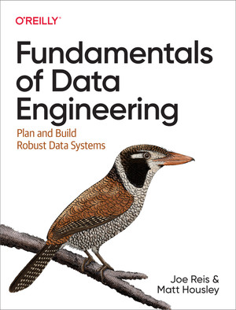
[AI-Generated] A comprehensive look at the data engineering lifecycle. It helped clarify how to manage data as a product from source to storage.
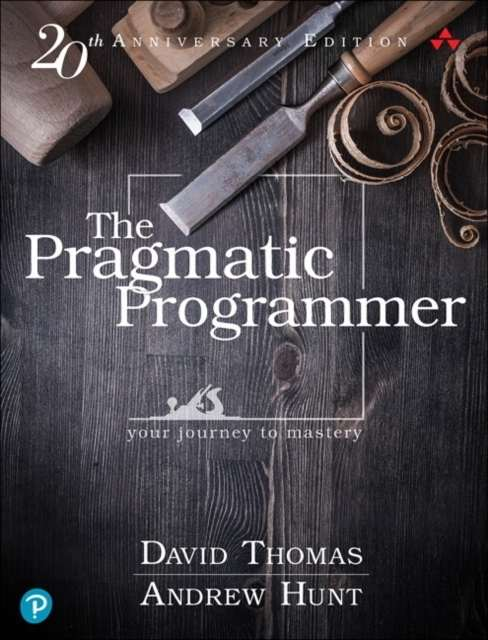
This book has taught me to never stop learning, to know my audience, how to estimate, to remove dead code regularly and to finish what I start.
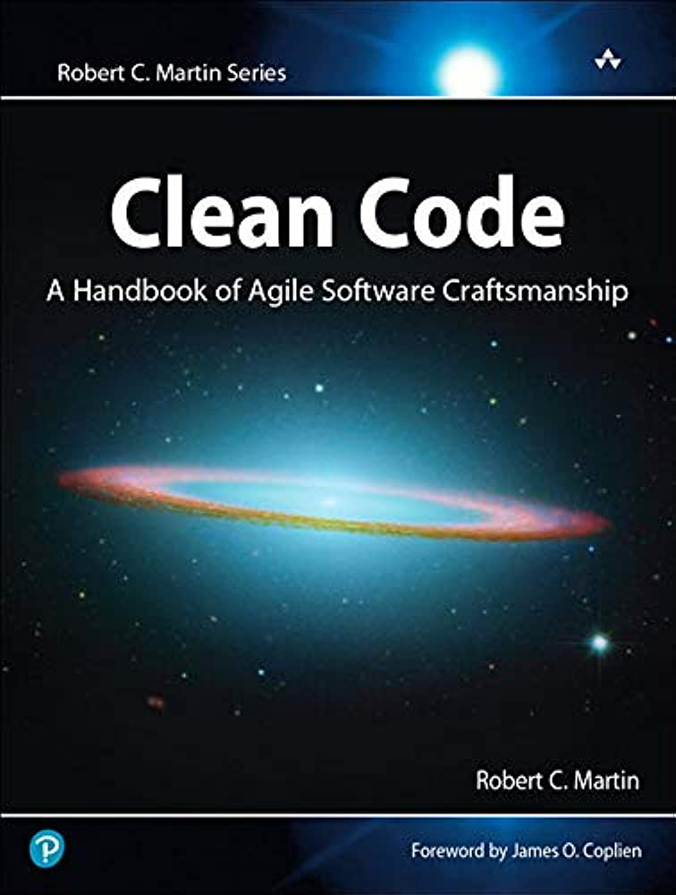
I've learned that simpler is always better, to follow the boy scout rule and to always look for the root cause.
I've learned why Netflix is so good at delivering content - their CDN, moving to AWS. I explored concepts of scalable computing, cloud service, it was an easy read.
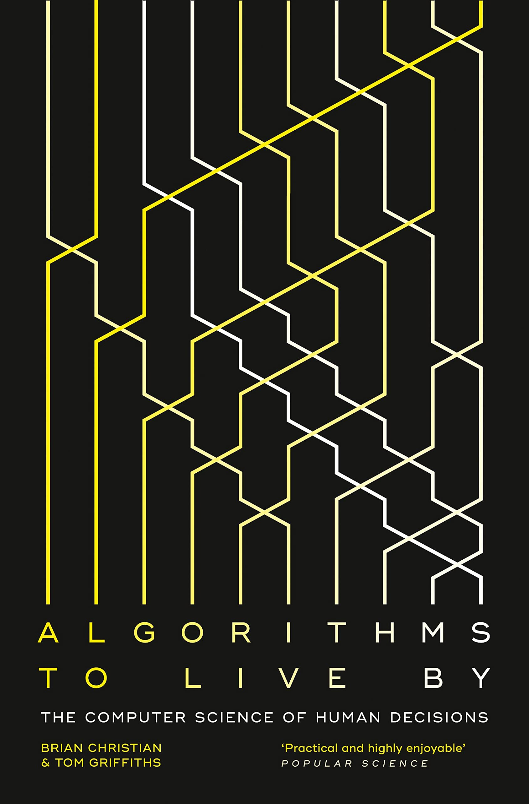
I became familiar with various algorithms and their application to real-life problems, namely Optimal stopping - 37% rule, Explore/exploit, Sorting theory, Caching theory, Scheduling theory and Game theory.
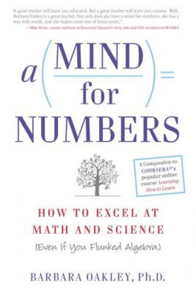
[AI-Generated] Explores techniques for mastering math and science. The focus on diffuse vs. focused thinking is a game-changer for problem solving.
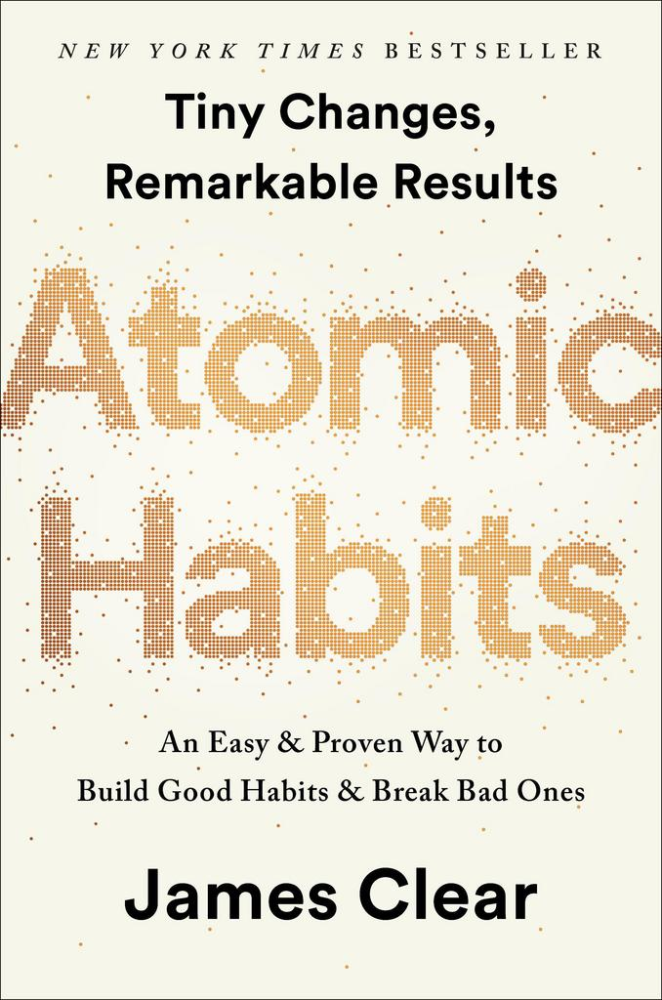
This book inspired me to make reading a habit using habit stacking. Your habits are a reflection of your current identity.
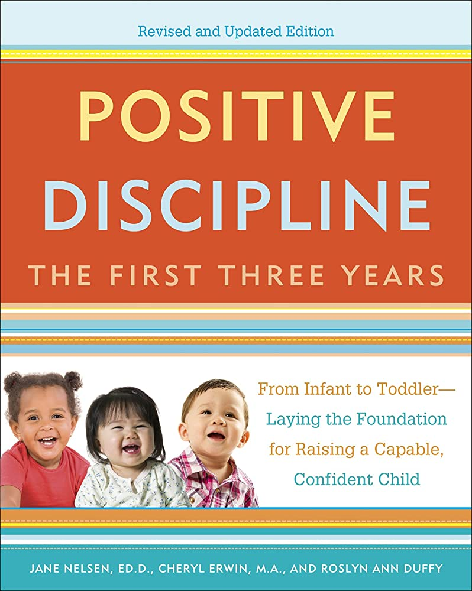
Positive Discipline is a marvelous approach to raising children - be kind but be firm. I learned a lot about common behavior in children: anger tantrums, power struggles etc.
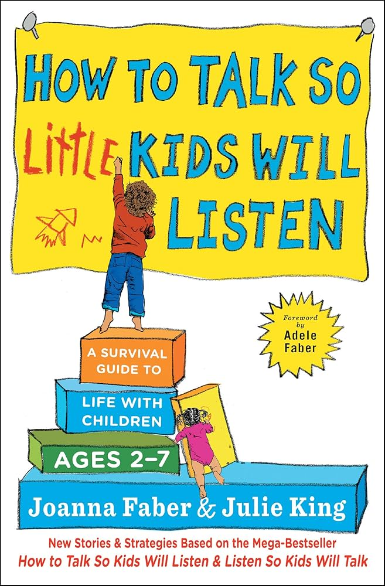
[AI-Generated] A survival guide for parents of young children. It offers actionable strategies for communication that foster cooperation and empathy.

[AI-Generated] A timeless look at personal effectiveness. Focuses on being proactive and beginning with the end in mind.
[AI-Generated] A clear guide on how to identify and express your needs. Essential for maintaining healthy personal and professional relationships.
[AI-Generated] Outlines different ways people express and receive love. A useful tool for improving communication in any relationship.
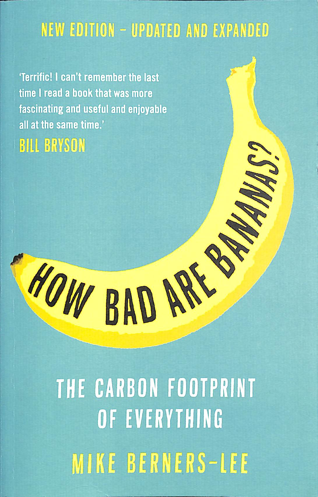
[AI-Generated] Provides a fascinating breakdown of the carbon footprint of everyday things, helping to put environmental impact into perspective.
[AI-Generated] An exploration of China's rapid infrastructure and technological growth, highlighting the scale of modern engineering challenges.
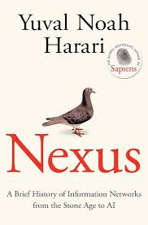
[AI-Generated] A deep look at how information networks have shaped our world, from the Stone Age to the rise of AI. It challenges the idea that more information always leads to more wisdom.
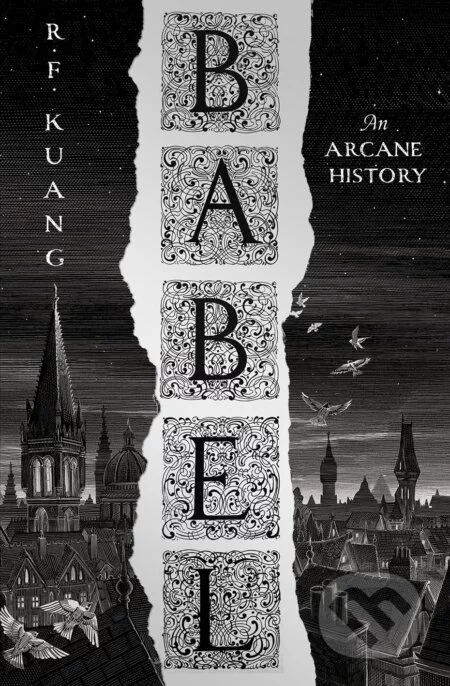
[AI-Generated] A dark academic fantasy that dives into the power of language and the history of colonial expansion through a magical lens.
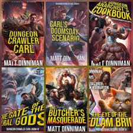
[AI-Generated] A chaotic and hilarious LitRPG where humanity must survive a televised galactic dungeon crawl. Ridiculously fun.
[AI-Generated] Reading these in German (Kinder des Nebels / Krieger des Feuers). Sanderson’s world-building remains top-tier across any language.
The Lord of The Rings is a timeless gem of fantasy genre. The series was among the first advanced books which I read in English.
Read 3-times over, this 9-book series captivated me during my teenage years.
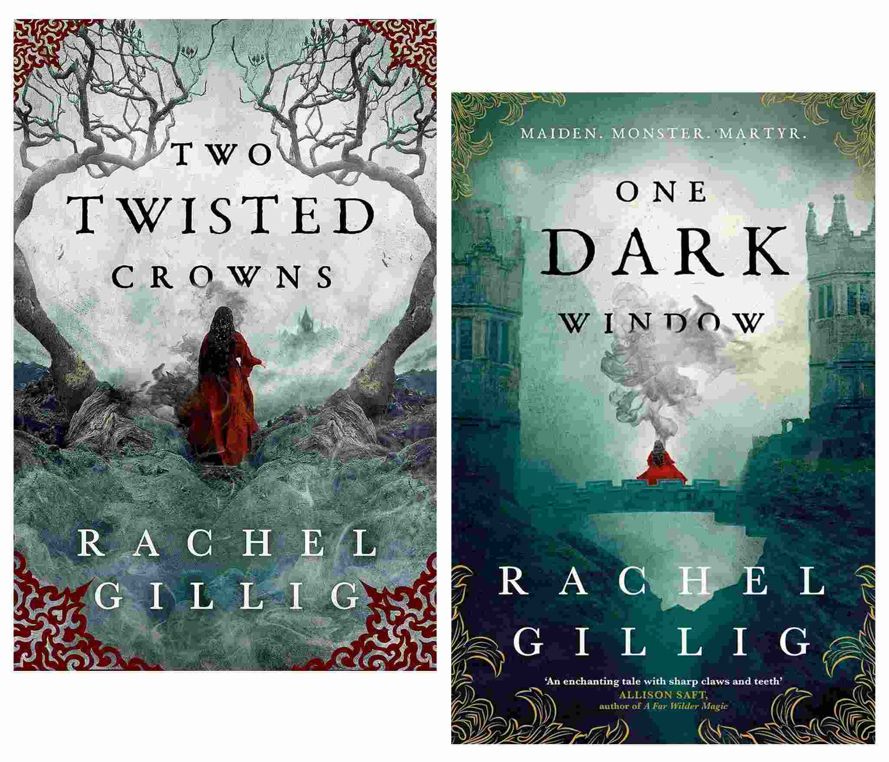
[AI-Generated] A dark, romantic fantasy duology with a magic system centered around a deck of ancient, cursed cards.
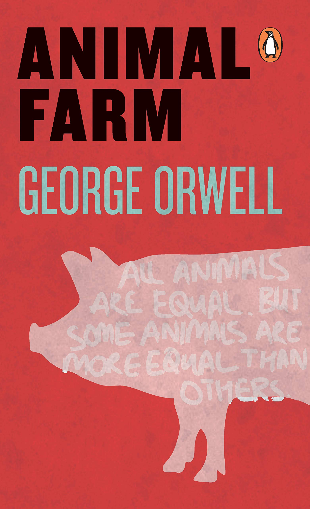
Animal Farm helped me to better understand how people felt about socialistic regime. “All animals are equal, but some animals are more equal than others.”
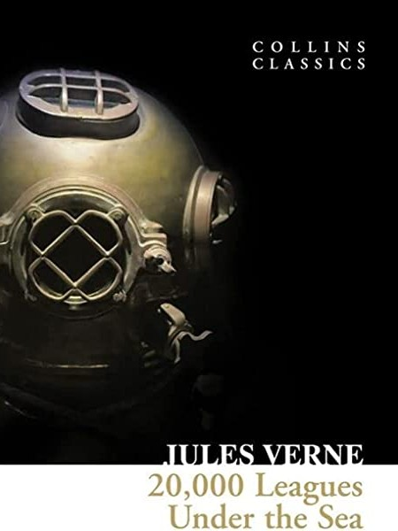
This journey through the depths of the ocean told in a thrilling way was fascinating. I was fully immersed in the story.

[AI-Generated] Reading this in Spanish. A beautiful and philosophical story about a young prince visiting various planets, reminding us of what is invisible to the eye.
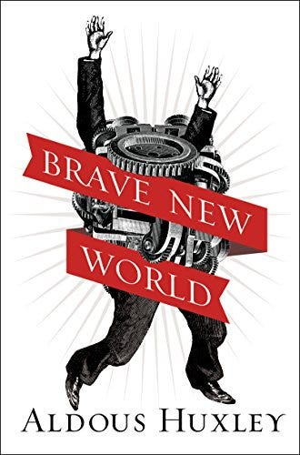
[AI-Generated] A classic dystopian novel that depicts a future society driven by consumption, stability, and genetic engineering.
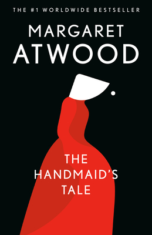
Dystopian society where women are treated merely as servants to help around the house and to reproduce.
Depicting the western front during the Great War, this book has displayed the horrors of war from a completely new perspective.
I enjoy fantasy, so reading about vampires, even in old english was fun.
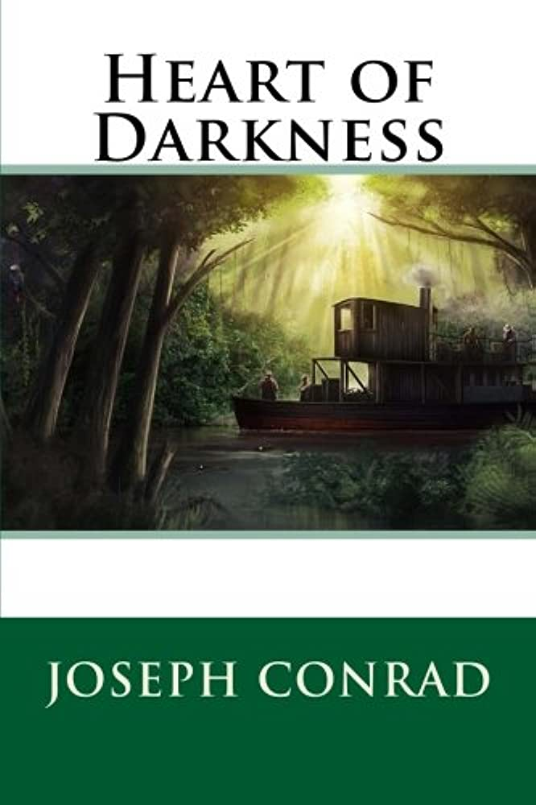
Aboard the steamer I ventured into the heart of Africa and was exposed to the evils of imperialism.
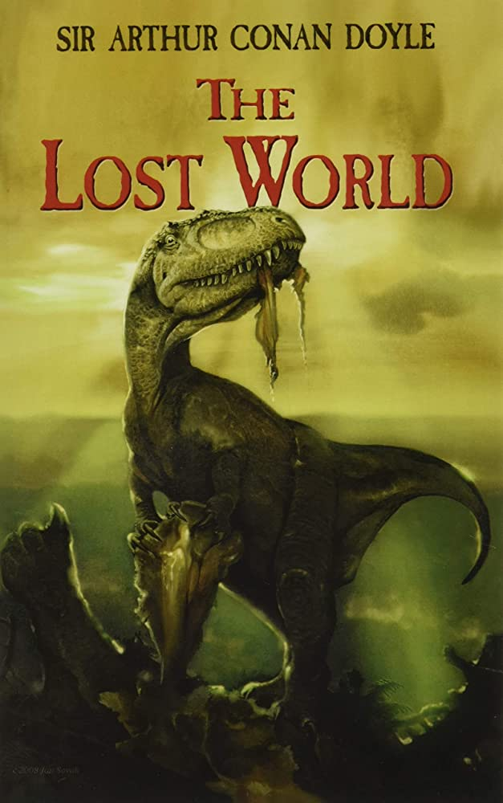
Working on yourself to impress others is not worth it - do it for yourself. Also dinosaurs are cool.
Dr Jekyll and Mr Hyde is a classic sci-fi book with elements of horror. Good read overall.
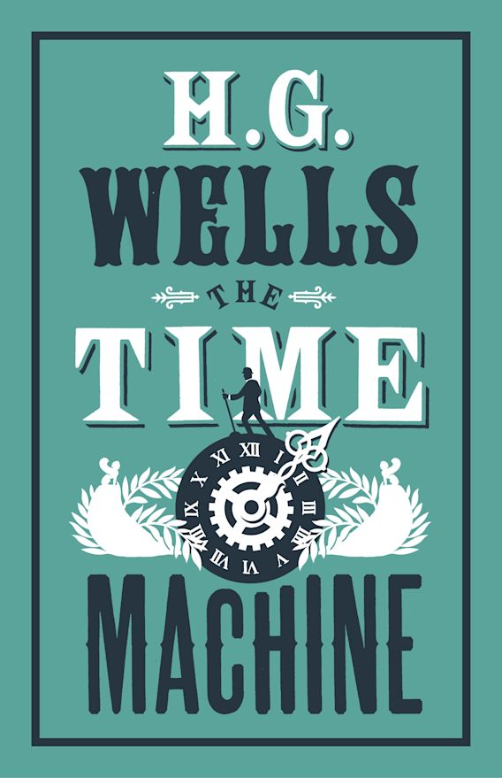
Exploring the future of degenerated human race was a fun read.
[AI-Generated] A poignant Japanese novel about a café that allows people to travel back in time for one last conversation.